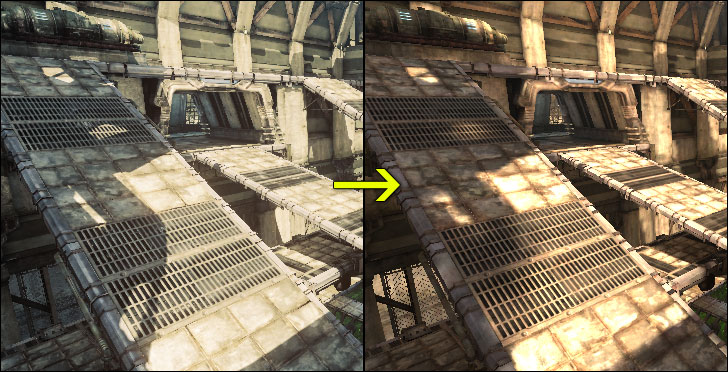
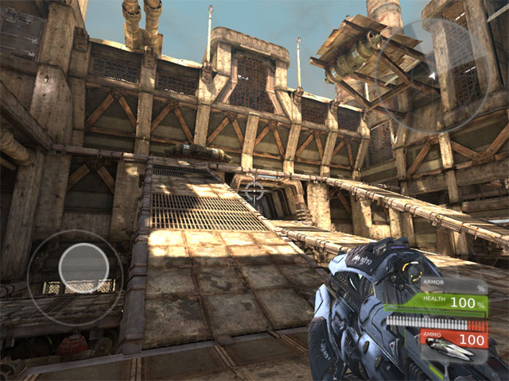

UDN
Search public documentation:
MigratingMobileJune2011CH
English Translation
日本語訳
한국어
Interested in the Unreal Engine?
Visit the Unreal Technology site.
Looking for jobs and company info?
Check out the Epic games site.
Questions about support via UDN?
Contact the UDN Staff
日本語訳
한국어
Interested in the Unreal Engine?
Visit the Unreal Technology site.
Looking for jobs and company info?
Check out the Epic games site.
Questions about support via UDN?
Contact the UDN Staff
2011年6月UDK测试版的移动设备项目迁移
概述
合并工作流程
- 将自定义内容包从
MobileGame\Content目录重新定位至UDKGame\Content目录。 - 从
MobileGame\Content\Maps重新定位到UDKGame\Content\Maps并将扩展名从.mobile. 改成.udk。 - 将
MobileGame\Config.中的修改合并到UDKGame\Config\Mobile.ini 文件。 详细说明：-
MobileGame\Config\DefaultEngine.ini->UDKGame\Config\Mobile\MobileEngine.ini -
MobileGame\Config\DefaultGame.ini->UDKGame\Config\Mobile\MobileGame.ini -
MobileGame\Config\DefaultInput.ini->UDKGame\Config\Mobile\MobileInput.ini
-
.udk 。 新建地图或者使用另存为存储的地图，除了明确的设定以外，都会存储为=.udk= 。
重命名Gameplay类
MobileGame=、 =MobilePC 和 MobilePawn 类已经分别重命名为=SimpleGame= 、 SimplePC 、和 =SimplePawn=。 如果您项目的游戏类型、玩家控制器或者Pawn类直接从其中任何一个类中扩展而来，或者引用它们，那么这些引用要进行更新以指向新的类名称。 否则，您在编译项目时会出错。 重命名类保留了它们父类的所有功能，所以当引用更新以后，所有的部分都应该能继续同预计那样正常运转。
这些类非常基础，您不会如预想的那样看到在没有任何修改的情况下能在第一人称视角下看到一把枪的情况。 当升级时，如果您正在使用一个自定义游戏类，您会需要通过ini文件设置中新的*Default Game Type(默认游戏类)* ，或自定义脚本代码来设置您地图所要的游戏类。
指定游戏类
SimpleGame 已经加入这个功能，可以基于地图的后缀名选择游戏类,所以一些有DM、VCTF等UT类地图还是如预期的那样加载UT游戏种类，并且在ini文件和使用您地图的任何自定义地图后缀都可以正常使用。
在编辑器中预览

另外，Play In Editor功能可以使用移动设备输入、控制和渲染。